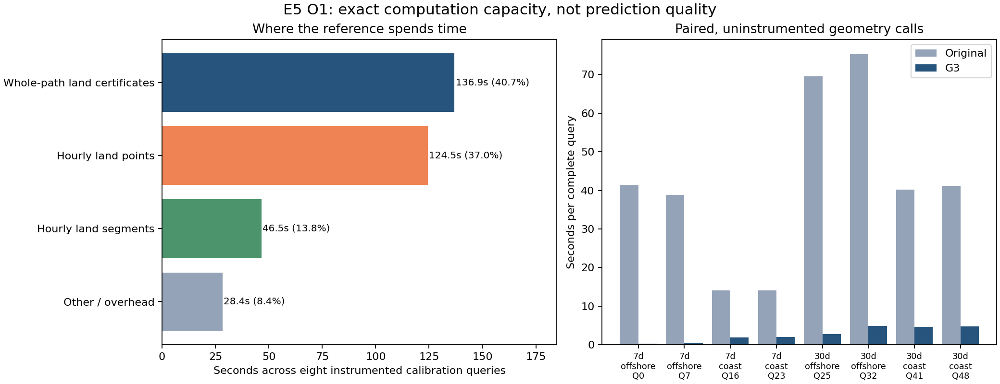

Full experiment has not started. These measurements describe exact engineering acceleration, not prediction quality.

| stage | seconds | minutes |
|---|---|---|
| A | 677.18 | 11.29 |
| B | 1335.17 | 22.25 |
| C | 60.00 | 1.00 |
| D | 0.00 | 0.00 |
Paired aggregate speedup: 15.39×.
| query_index | horizon | coastal | seconds_old | seconds_new | speedup |
|---|---|---|---|---|---|
| 0 | 7 | False | 41.3604 | 0.2132 | 194.0337 |
| 7 | 7 | False | 38.8725 | 0.5725 | 67.8986 |
| 16 | 7 | True | 14.0801 | 1.9111 | 7.3676 |
| 23 | 7 | True | 14.0158 | 2.0297 | 6.9053 |
| 25 | 30 | False | 69.5274 | 2.7815 | 24.9963 |
| 32 | 30 | False | 75.3114 | 4.8376 | 15.5678 |
| 41 | 30 | True | 40.1960 | 4.6346 | 8.6730 |
| 48 | 30 | True | 41.0315 | 4.7409 | 8.6548 |
The shared prepared-geometry thread benchmark crashed inside GEOS. Extended validation and scoring capacity measurements did not complete. No retry or full experiment was launched.
Geometry only: about 250 h at calibration mean rates; 635 h with slow-rate reserve. Including fresh geometry replay: 500 / 1270 h. These are coarse scale diagnostics, not complete-run estimates or confidence bounds.
{
"all_completed_calibration_comparisons_matched": true,
"calibration_queries": 8,
"in_process_full_pair_comparisons_per_variant_batch": 355418,
"independent_real_scalar_checks_completed": 0,
"limitation": "Completed benchmark records are written only after in-process array equality assertions. Optimized arrays remained in RAM and were lost; no independent saved-array comparison is claimed.",
"optimized_raw_arrays_persisted": false,
"real_data_region_and_selection_parity_completed": false,
"remaining_engineering_validation_queries": 50,
"status": "INCOMPLETE",
"variant_batch_comparisons": 6
}